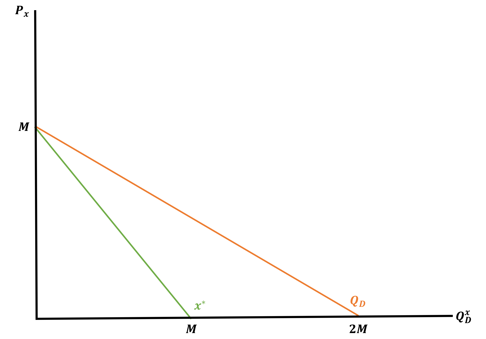
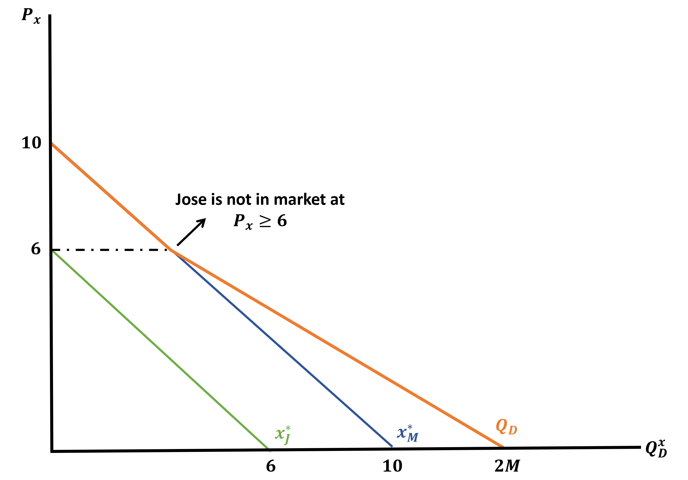
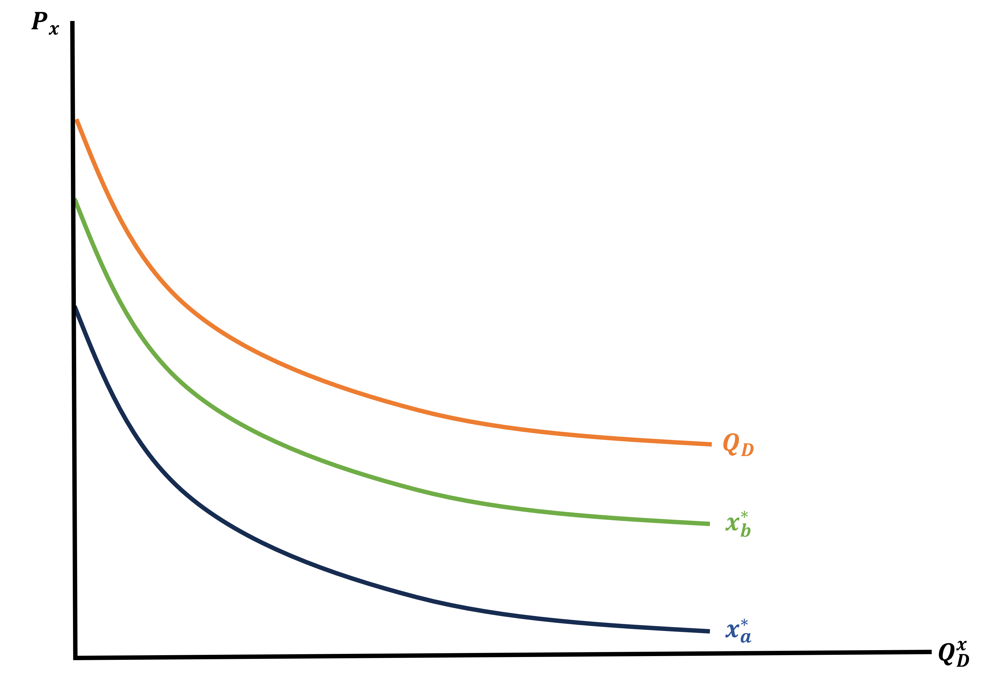

Up to Now
All the work we have done until now has been to understand and characterize where demand for a good comes from at an individual level
. . .
But now, we want to talk about how markets behave and where prices come from
To do so, we need a measure of Aggregate or Market Demand
Market Demand
We will begin by assuming the following demand function for ONE consumer in a market
\[ x^{*} = f(P_{x},M) = M - P_{x} \]
. . .
If I said that this market was made up of 2 consumers with identical utility functions and incomes how can I get market demand?
. . .
- Add them up
- Market Demand \((Q_{D})\) is the sum of all individual demands
\[ Q_{D} = x^{*} + x^{*} = 2x^{*} \; \rightarrow \; 2(M - P_{x}) = 2M - 2P_{x} \]
Market Demand - Graphically
Individual Demand
\[\begin{align*} x^{*} &= M - P_{x} \\ P_{x} &= M - x^{*} \end{align*}\]
Market Demand
\[\begin{align*} Q_{D} &= 2M - 2P_{x} \\ 2P_{x} &= 2M - Q_{D} \\ P_{x} &= M - \dfrac{Q_{D}}{2} \end{align*}\]

Let’s Make It More Complicated
We will call our 2 agents Jose and Maria
Now we will assume the same demand \(x^{*} = M - P_{x}\) but they have different incomes \((M)\):
Jose has \(M = 6\)
Maria has \(M = 10\)
It is still the case that market demand is the sum of both individuals
. . .
\[ Q_{D} = x^{*}_{J} + x^{*}_{M} = 10 - P_{x} + 6 - P_{x} = 16 - 2P_{x} \]
But there is an issue here!
What is it?
Once \(P_{x} \geq 6\), Jose demands 0 and only Maria is left in the market
Complicated Market Demand
Individual Demands
\[\begin{align*} x^{*}_{J} &= 6 - P_{x} \\ P_{x} &= 6 - x^{*}_{J} \end{align*}\]
\[\begin{align*} x^{*}_{M} &= 10 - P_{x} \\ P_{x} &= 10 - x^{*}_{M} \end{align*}\]
Market Demand
\[\begin{align*} Q_{D} &= 16 - 2P_{x} \\ 2P_{x} &= 16 - Q_{D} \\ P_{x} &= 8 - \dfrac{Q_{D}}{2} \end{align*}\]

Market Demand
Whenever you add up linear demand curves across individuals with different \(P_{x}\) intercepts in the demand curves, you will get a small kink in the market demand function
. . .
Note: The only linear demand curves we have are Perfect Substitutes and Quasi-linear so you should be able to identify them
Market Demand - Example 2
Let there be 2 agents with the following utilities
\[ U_{a} = ln(x) + y \;\;\;\; \& \;\;\;\; U_{b} = 2ln(x) + y \;\;\; ; \;\;\; P_{y} = 1 \]
Find the market demand curve (Hint: Find \(x_{a}^{*}\) and \(x_{b}^{*}\))
. . .
\[\begin{align*} x_{a}^{*} &\; : \; MRS = \dfrac{P_{x}}{P_{y}} \; \rightarrow \; \dfrac{MU_{x}}{MU_{y}} = \dfrac{P_{x}}{1} \; \rightarrow \; \dfrac{1}{x^{*}_{a}} = P_{x} \; \rightarrow \; x^{*}_{a} = \dfrac{1}{P_{x}} \\ x_{b}^{*} &\; : \; MRS = \dfrac{P_{x}}{P_{y}} \; \rightarrow \; \dfrac{MU_{x}}{MU_{y}} = \dfrac{P_{x}}{1} \; \rightarrow \; \dfrac{2}{x^{*}_{b}} = P_{x} \; \rightarrow \; x^{*}_{b} = \dfrac{2}{P_{x}} \end{align*}\]
. . .
\[\begin{align*} Q_{D} &\; : \; x^{*}_{a} + x^{*}_{b} = \dfrac{1}{P_{x}} + \dfrac{2}{P_{x}} = \dfrac{3}{P_{x}} \; \rightarrow \; Q_{D} = \dfrac{3}{P_{x}} \; \rightarrow \; P_{x} = \dfrac{3}{Q_{D}} \end{align*}\]
Market Demand - Example 2 Graph
Individual Demand Functions
\[\begin{align*} P_{x} = \dfrac{1}{x^{*}_{a}} \end{align*}\]
\[\begin{align*} P_{x} = \dfrac{2}{x^{*}_{b}} \end{align*}\]
Market Demand Function
\[\begin{align*} P_{x} = \dfrac{3}{Q_{D}} \end{align*}\]

Consumer Theory
All we have seen up to now is the basics of Consumer Theory
A quick example of an application can be:
- Let’s say you are interested in the demand for energy drinks
- You build utility functions for a couple different groups in the market that you believe represent their preferences for energy drinks and other consumption
- You solve the maximization problem and understand how the optimal solutions change when inputs change
- Then you add up the solutions across groups in the market to measure the relationsihp between price and demand